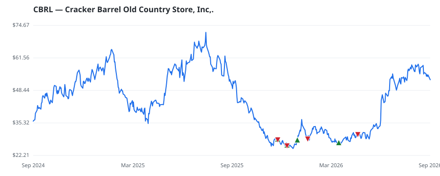

bullish · bearish · n/a — dots: price>SMA10 · SMA10>SMA50 · SMA50>SMA200 · up>down volume (20d)
Consumer Services · small cap
Members who bought CBRL earned a dollar-weighted +3.1% from their disclosure dates, versus +1.4% for the S&P 500 over the same holding windows (+1.7% alpha).

▲ green = a disclosed purchase · ▼ red = a disclosed sale (plotted on disclosure date)
Cracker Barrel Old Country Store Inc operates hundreds of full-service restaurants throughout the United States. The Cracker Barrel stores consists of a restaurant with a gift shop. The restaurants serve breakfast, lunch and dinner. The gift shop offers a variety of decorative and functional items specializing in rocking chairs, holiday gifts, toys, apparel and foods. RETAIL-EATING PLACES · website
| Revenue | $3.5B | Net income | $46.4M |
|---|---|---|---|
| Operating income | $55.0M | Diluted EPS | $2.06 |
| Assets | $2.2B | Equity | $461.7M |
| Member | Chamber | Out-performer | Disclosed buys $ | Return on buys |
|---|---|---|---|---|
| Tim Moore | house | yes | $205K | +3.1% |
Disclosed $ figures are bracket midpoints — filings report ranges (e.g. $1,001–$15,000), not exact amounts.